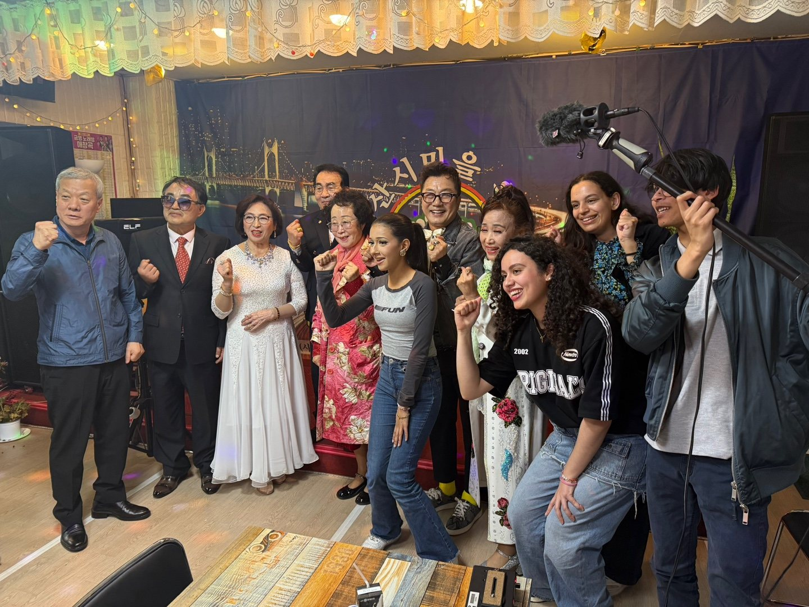
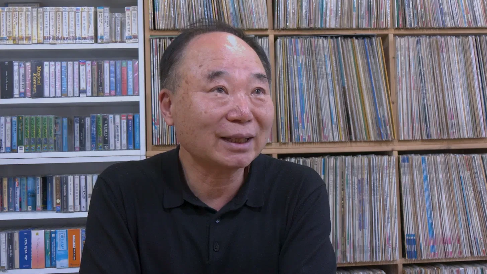
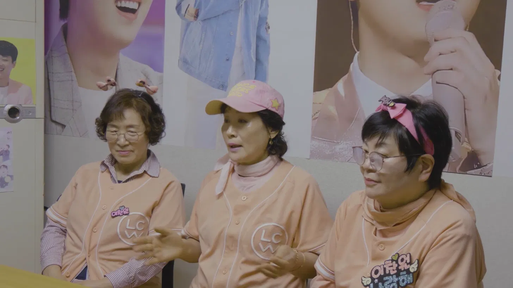

MY ROLE
- Lead documentary research, writing, archives & sourcing
- Organization of shoots & interviews
- Liaison between the Korean team and interviewees
- Subtitle translation Korean to French
- Concept & Poster Design
•
Documentary Website
•
On Location



